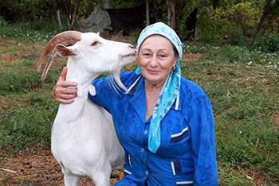
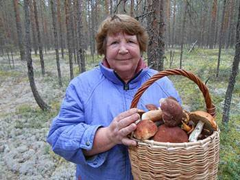

Від редакції: Обов'язково дочитайте до кінця! Далі інтерв'ю з відомим лікарем Є. О. Комаровський, у якому він чесно розповість, як, ефективно відновити суглоби, забувши про біль назавжди!
Кореспондент: Катерино, доброго дня! Дякую, що погодилися дати ексклюзивне інтерв'ю нашому виданню. Про Ваше здоров'я ходить багато чуток. Деякі навіть стверджують, що бачили Вас у інвалідному візку. Невже це правда?
Катерина Соболь: Добрий день! На жаль так, це не вигадки. В інвалідному візку я побувала, хоч і недовго.
Але навіть кілька місяців в інвалідному візку мені вистачило, щоб відчути на собі всі «принади» такого життя.
Кореспондент: Що сталося? Як Ви опинилися в інвалідному візку?
Катерина Соболь: Моя професія передбачає надмірні фізичні навантаження. Особливо це навантаження лягає на суглоби ніг. Багаторічні тренування не пощадили мої суглоби і, як сказав один лікар «твої суглоби перетворилися на потерть».
Чути таке було страшно! Це означало кінець моєї кар'єри та інвалідність, що наближається.
Але тоді я не усвідомлювала усієї небезпеки. Продовжувала танцювати, брати участь у різних шоу, погоджувалася на пропозиції гастролювати. І це була велика помилка.
Перед тим, як вийти на сцену, я робила собі знеболюючий укол, а після ковтала пачками пігулки, щоб заснути і не відчувати болю.
Мої коліна майже перестали згинатися. Гомілка постійно набрякала так, що я не могла одягти взуття. Я важко пересувавалась, але продовжувала працювати. Ну не могла я кинути своїх колег та зірвати заплановані вистави. Лікарі забороняли мені працювати, погрожували інвалідним кріслом. Але я нікого не слухала, запустила проблему та поплатилася за це, провівши досить довго в інвалідному кріслі…
Хочу звернутися до всіх! Не повторюйте моїх помилок! Якщо у вас болять суглоби – це серйозно! Хвороба прогресує дуже швидко і може зробити вас інвалідом лише за півроку!
Кореспондент: Ви зверталися до лікарів? Чи отримували якесь лікування?
Катерина Соболь: Так, я зверталася до лікарів. Для мене замовляли дорогі закордонні препарати. Щоразу я сподівалася, що ось цей німецький чи ізраїльський препарат мені точно допоможе, але результату не було. Я витратила величезні кошти на мазі, таблетки, уколи, процедури, але все було марно.
Коли я опинилася в інвалідному візку, зізнаюся чесно, у мене були думки піти з життя. Ти перетворюєшся на безпорадну рослину, стаєш тягарем для своїх близьких, не можеш сам сходити в туалет (вибачте за подробиці), прийняти душ, приготувати їжу…
Це так огидно — почуватися безкорисним, нікому не потрібним, забутим, самотнім. Мені перестали дзвонити друзі, всі про мене забули… Я поринула у депресію, не могла вийти без допомоги на вулицю. Та й не хотіла, щоб мене хтось бачив у інвалідному візку.
Хвороба, біль, самотність, безпорадність - це дуже страшно! Я такого не побажаю навіть найзаклятішому ворогові!
Кореспондент: Як Вам вдалося встати з інвалідного крісла? Наскільки я знаю, ви повернулися знову у професію?
Катерина Соболь: Мені допомогло диво! Інакше я не можу сказати. Доля звела мене з лікарем Конзюба. Я чула про нього раніше. А тут моя гарна знайома дала мені його телефон. Я зателефонувала, і Анатолій Іванович мене прийняв.
Він дав мені капсули, сказав, що він на основі рідкісних компонентів і так просто їх не дістати. Чесно зізнатися, я перепробувала уже багато всього і не вірила, що ці капсули допоможе мені. Але вже через пару днів, я відчула себе набагато краще.
Кореспондент: Тільки завдяки цим капсулам?
Катерина Соболь: Так, я й сама була приголомшена. Суглоби перестало «крутити», пішов біль, я змогла вперше за довгі місяці виспатися. І з кожним днем мені ставало все краще та краще. Через два тижні я змогла підвестися з ліжка. І сама, тримаючись за стіну, дійшла до туалету. Це була перша перемога! І цей препарат мені дав Євгеній Комаровський , не перестану йому дякувати!
За місяць я вже могла пересуватися квартирою. Ноги не опухали, набряк спав. Біль практично пішов, повернулася рухливість, я змогла згинати коліна.
Після 1,5-2 місяців я повернулась до роботи. Мої колеги не чекали мене побачити. Вони були в шоці — лише кілька місяців тому я була безпорадним інвалідом в колясці, а зараз стою на своїх ногах і показую учням нові па.
Ми зустрілися з лікарем Катерини Соболь — Євгенієм Комаровським і поговорили на тему захворювань суглобів. Євгеній Олегович розповів:
Як врятувати себе від інвалідного крісла і швидко позбутися артрозу, артриту, остеохондрозу та інших захворювань суглобів
Кореспондент: Доброго дня, Євгеній Олегович! За даними ВООЗ у нашій країні захворюваннями суглобів страждає кожна третя людина. Чим викликана така «епідемія»?
Є. Комаровскьий : Здрастуйте. На жаль, Ви маєте рацію. Кількість захворювань суглобів стрімко зростає. І якщо раніше моїми пацієнтами були в основному люди похилого віку, то сьогодні все частіше до мене звертаються 30-40-річні молоді люди.
І найстрашніше, що в нашій країні люди не готові приділяти достатньо уваги своєму здоров'ю. Пацієнти терплять до останнього і приходять до мене, коли вже знемагають від болю і втрачають можливість жити нормальним життям. Адже набагато простіше сходити в аптеку, купити знеболювальну мазь, намазати хворий суглоб — і знову на город на прополювання!
Запам'ятайте! Аптечні засоби тільки маскують симптоми. Вони не вирішують проблему і не позбавляють артрозу та артриту. Ви просто втрачаєте час і наближаєте свою інвалідність!
Погляньте на ці знімки, ви бачите, що на правому знімку суглобова щілина відсутня, кістки труться один об одного, викликаючи сильний біль. І цей процес дуже важко зупинити! Через пару років людина стане інвалідом і не зможе себе обслуговувати.
Кореспондент: Які причини захворювань суглобів?
Є. Комаровскьий : Насамперед, це травми та серйозні навантаження. Зайву вагу також надає сильний тиск на суглоби. Малорухливий спосіб життя, стреси, велика кількість солі і цукру в їжі все це розм'якшує хрящову тканину, зношує та стоншує її. Від кожного нового руху хрящ стирається і деформується, кістки починають тертися один об одного, викликаючи нестерпну біль.
На жаль, багато пацієнтів пропускають перші симптоми захворювання, пускаючи все на самоплив і приходять до лікарів тоді, коли вже надто пізно. Нерідко я стикаюся і з самолікуванням, іноді з абсурдними способами, на кшталт обертання суглобів капустяним листом, намазуванням медом тощо.
Не жартуйте з артрозом та артритом! Захворювання суглобів доведуть вас до інвалідного крісла менш ніж за 3 роки!
Кореспондент: Коли час бити на сполох? Які симптоми мають насторожити?
Є. Комаровскьий : Насторожити мають такі симптоми, як:
Кореспондент: Як допомогти людям? Ми знаємо, що Ви допомогли Катерині Соболь встати з інвалідного крісла. Розкажіть про це будь ласка.
Є. Комаровскьий : Наука не стоїть на місці. Сьогодні є інноваційні засоби, які здатні багато на що. І навіть підняти з інвалідного крісла. Але, на жаль, у поліклініці такі засоби не випишуть і в аптеці ви їх не купите.
Хіба вигідно продавати те, що позбавить проблем із суглобами назавжди? Ні, їм вигідно продавати засоби, до яких хворі звикли та використовують їх постійно.
Кореспондент: Про який ефективний препарат Ви говорите? Що допомогло пані Катерині?
Є. Комаровскьий : Не лише її, а й тисячам звичайних людей. Я говорю про препарат ArthroLead. Розробка нашого НДІ Ревматології. Воістину унікальна і, я сказав би, революційна розробка наших вчених. Це повністю натуральний препарат, який здатний відновити суглоб на клітинному рівні. При курсовому застосуванні, звичайно.
У складі препарату ArthroLead великий комплекс рослинних екстрактів та біоактивних компонентів із високоактивною молекулярною структурою.
Не перераховуватиму їх усі, розповім про головні компоненти:
Окрім того, що препарат швидко та ефективно пригнічує запалення, відновлює всі обмінні процеси і запускає регенерацію хрящів та суглобів, ці капсули дають ще й комплексний оздоровлюючий ефект для всього організму. Дивіться самі:
1. Суглоби та хребет відновлюються
98,3% пацієнтів позбулися болю в суглобах та хребті. Це майже стовідсотковий результат! Такого я ніколи раніше не зустрічав, жоден препарат не показувало таку ефективність.
Завдяки своєму природному складу та відсутності хімії та ГМО, ArthroLead бореться з причиною появи хвороб. З його допомогою вдається позбутися набряклості, запалення і болю в суглобах і повністю відновити їх функції в домашніх умовах лише за 1,5-2 місяці.
2. Знижується ризик інсульту та інфаркту
Артрит, артроз, радикуліт, подагра та інші хвороби суглобів супроводжуються різким та масштабним поширенням запальних процесів у організмі. Відбувається раптовий стрибок усіх основних показників, таких як ШОЕ, рівень еритроцитів та тромбоцитів, а це пряма загроза серцю.
За рахунок того, що ArthroLead надійно усуває запалення, в 7 разів знижується ризик інфаркту та інсульту у гострій фазі ревматоїдних захворювань.
3. Підвищується імунітет
Під час курсового застосування ArthroLead у пацієнтів відзначалося загальне поліпшення кровопостачання кісткового мозку, що займається виробництвом імунних клітин. Це призводить до посилення захисних сил організму.
Імунітет, який працює хоча б на 50%, вже є непереборною перешкодою для вірусів. А це сьогодні теж дуже важливо.
Капсули ArthroLead також:
Якщо підвести короткий підсумок, можу сказати, що ArthroLead
препарат можна отримати лише через офіційний сайт, так як на всіх бажаючих його не вистачає, що не дивно, адже люди передають інформацію про цей препарат один одному, і ажіотаж зростає щодня. Я домовився з лабораторією про безкоштовне перше замолвення. У такий важкий час я намагаюсь допомагати нашим громодянам.
Кореспондент: Дякую, Євгеній Олегович, ми обов'язково розмістимо всю необхідну інформацію для наших читачів.
Умови отримання ArthroLead за акцією:
УВАГА! Останні дослідження підтвердили, що найбільш сприятливий період для початку використання ArthroLead — липень і серпень ! Зміни температури сприяють прискоренню обміну речовин та більш швидкому відновлення суглобів.
Ви можете отримати безкоштовно*
OK
Коментарі:
печатает... Рекомендую всім цей препарат! ArthroLead дуже допоміг! Біль відступив, можу по сходах на 4 поверх піднятися, а ще тільки половина курсу позаду.
Замовила по акції зі знижкою, дуже сподіваюся, що допоможе. Сил уже немає, артроз замучив.
Вітаю. Знаю яке це пекло, коли хворіють суглоби не з чуток. Ноги сильно болять, а в мене господарство, худоба. Стільки всяких засобів уже випробувала і народних і з аптеки, і все безтолку, тільки гірше стає. Зважилася взяти участь у розіграші та отримала гарну знижку! Думаю, була не була, і замовила цей ArthroLead. Забрала з пошти два тижні тому. Вже легше стало, займаюся господарством потихеньку.
Дуже потрібен ArthroLead цей, регіон не бере участі в програмі, що мені робити?
Пройшла повний курс ArthroLead. У мене настільки змінилося самопочуття. Я ніби відчуваю себе на 20 років молодшою. Коліно не болить, можу всі діла робити, ходити до дачі та в ліс по гриби. Бадьора, активна, чудовий препарат цей ArthroLead! Дуже сподобався!
Людмило, Ох гарні грибочки у Вас! Це де такі водяться? А препарат хороший, теж замовив собі та матері, користується.
Олег, це у нас у Чернівецькій області, приїжджайте!
Гарний препарат, що допоміг зняти біль у спині. Я спину зірвав на роботі, за день мене ArthroLead на ноги поставив.
У мене артроз внаслідок футбольної травми. Коліно болить постійно, не дає нормально жити. Спробував ArthroLead - реально допоміг, боліти коліно перестало.
Замовляю не вперше, допомагає мамі з коліном та батькові з попереком.
Оооо, танцюристам не позаздриш, сама займалася танцями довго, ноги всі хворі. Щойно відразу запалюються і набрякають від будь-якого навантаження. місяць ArthroLead використала і в мене пройшло запалення, набряк спав і біль вщух.
Також були проблеми із суглобами, артроз коліна. Але ArthroLead швидко поставив на ноги. Тепер із онуком можу в парку гуляти.
От козли аптеки ці зовсім нахабніли вже, ціни скажені половину пенсії відношу кожен раз. А хорошого засобу в аптеках немає. Як же так?
Наталія, Мені про ArthroLead говорив мій лікар, сказав що дістати важко, але воно того варте.
У мене артрит уже п'ять років, мучаюсь, страждаю, викинула в трубу вже купу грошей. А ArthroLead допоміг, за кілька тижнів біль зменшив, запалення зняв, набряк. Тепер дивіться, чим займаюсь! А то лежала тільки, як баба-розвалюха, а зараз активна пенсіонерка! Донька навіть на згадку знімала.
Дуже хороший препарат, мені допомогло позбутися болю в спині. У мене остеохондроз, сидяча робота, болить дуже спина. Довго шукала ефективне препарат. Ось нарешті знайшла!
Я як лікар можу вам сказати, що справді такого ще не було і чому не випускають ринку - незрозуміло. Окремо кожен із цих компонентів сильний, особливо капсаїцин у складі. А разом так вони можуть взагалі чудеса творити.
Хочу подякувати творцям засобу ArthroLead. Користувався цими капсулами 1,5 місяця. За цей час у мене повністю пройшов біль у коліні, почав рухатися, настрій гарний, бадьорий, веселий, займаюсь спортом на свіжому повітрі та хочу дожити до 100 років.
Гарний препарат, допоміг моїй мамі, вона давно мучиться від болю в спині та в коліна. Трохи менше, ніж за пару місяців, мама почала пересуватися квартирою, і більше не скаржиться на біль.
Ось щойно замовлення зробила. Дуже на ArthroLead сподіваюся, артроз замучив. Операцію пропонували із заміни суглоба, але щось боюся. Хочу спочатку ArthroLead спробувати.
Ганно, правильно боїтеся. У мене родичі робили заміну суглоба. Чи не прижився. Довго мучився і зрештою помер так і не вставши на ноги.
Ці аптеки ніяк не можуть нажертися, ціни божевільні! Такий препарат хороший, а вони його не продають! Аби нажитися на здоров'я пенсіонерів! Будь вони прокляті, буржуї ненаситні!
У мене спина хворіла сильно, а у Марини - дружини моєї, артрит. А після ArthroLead ми ось спортом займаємось, як бачите, суглоби більше не турбують.
Читала про нього вже. Люди писали, що їм допомагає. Сама поки не пробувала.
У мене артроз 2 ступеня. Болі пекельні. Жодне знеболювальне не допомагає. Мені говорили готуватися до інвалідного крісла. Але я поки не здаюся. Вперше почула про цей препарат, ось щойно в розіграші взяла участь і замовлення оформила, хочу спробувати.
Олександра, спробуйте обов'язково, ArthroLead мою маму на ноги поставив. Теж пророкували інвалідному візку і що неробочі руки будуть. А зараз подивіться на її тільки
Отримати по акції
Написане на даній сторінці є лише маркетинговою стратегією, продукт не є лікарським засобом, будь які співпадіння з реально існуючими людьми
або організаціями випадкові, в тексті використовуються перебільшення, до використання порадьтесь зі своїм лікарем